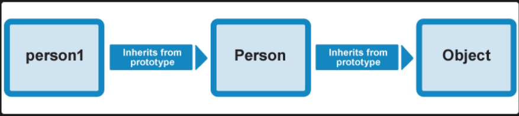
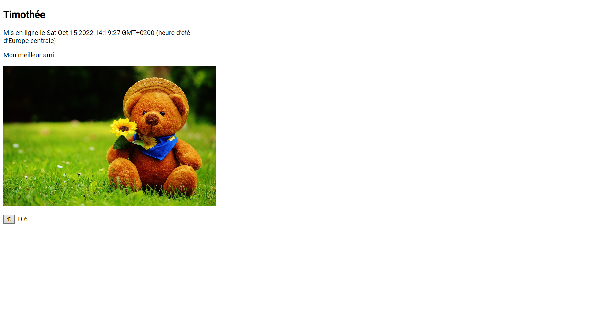

Dev Web 2
- Gabriel BARBE
Poursuite du Javascript dans un premier temps avec les chapitres :
- [Programmation orienté objets]
- [Découverte des API web]
Ces chapitres proviennent du site Mozilla.developer.org et font suite à mon premier MON sur JavaScript. (4h30/5h)
Dans un second temps, cours sur les bases d'Angular sur openclassroom
(https://openclassrooms.com/fr/courses/7471261-debutez-avec-angular)
Programmation orienté objet
- Les bases de JS orientés objet.
Dans ce chapitre nous sommes inités à ce qu'est un objet, comment ils sont construits ainsi que leurs différentes notations.
Un objet est une collection de variable et de fonctionalités.
var personne = {
nom: ['Jean', 'Martin'],
age: 32,
sexe: 'masculin',
interets: ['musique', 'skier'],
bio: function() {
alert(this.nom[0] + ' ' + this.nom[1] + ' a ' + this.age + ' ans. Il aime ' + this.interets[0] + ' et ' + this.interets[1] + '.');
},
salutation: function() {
alert('Bonjour ! Je suis ' + this.nom[0] + '.');
}
};
- Prototypes objet.
Ici, nous détaillons un peu plus le prototypage, les méthodes, la notion d'héritage ainsi que les constructeurs.
Le prototypage permet d'hériter des attributs et des méthodes d'autres objets : ci-dessous, personne1 est construit à partir de Personne.
function Personne(prenom, famille, age, genre, interets) {
this.nom = {
'prenom': prenom,
'famille' : famille
};
this.age = age;
this.genre = genre;
this.interets = interets;
let personne1 = new Personne('Jean', 'Biche', 32, 'neutre', ['musique', 'tricot', 'boxe']); //personne1 hérite des attributs de Personne()
Nous avons aussi vu comment modifier ce prototypage selon la chaine de prototypage. Tous les objets hérite des prototypes de 'Object()' qui est l'objet original disons. 
Nous pouvons aussi rajouter des méthodes à notre constructeur 'Personne' avec la structure :
Personne.prototype.aurevoir = function() {
alert(this.nom.prenom + ' est sorti. Au revoir !');
}
- Heritage au sein de JS
Nous voyons ici l'héritage et les constructeurs de manière plus précise et plus concrète. Dans l'exemple ci-dessous, nous créons un objet Professeur qui hérite des attributs de Personne. Nous y rajoutons ensuite un attribut et les deux dernières lignes servent à attribuer les méthodes de Personne à Professeur.
function Professeur(prenom, nom, age, genre, interets, matiere) {
Personne.call(this, prenom, nom, age, genre, interets);
this.matiere = matiere;
}
Professeur.prototype = Object.create(Personne.prototype);
Professeur.prototype.constructor = Professeur;
Nous voyons ensuite comment attribuer une nouvelle méthode ou encore modifier une méthode de Personne pour notre nouvel objet.
Professeur.prototype.saluer = function() {
var prefix;
if (this.genre === 'mâle' || this.genre === 'Mâle' || this.genre === 'm' || this.genre === 'M') {
prefix = 'M.';
} else if (this.genre === 'femelle' || this.genre === 'Femelle' || this.genre === 'f' || this.genre === 'F') {
prefix = 'Mme';
} else {
prefix = '';
}
alert('Bonjour. Mon nom est ' + prefix + ' ' + this.nom_complet.nom + ', et j\'enseigne ' + this.matiere + '.');
};
- Json
Le JSON est un moyen de stocker des objets et leurs propriétés afin de les réutiliser dans différents codes, et pas uniquement des codes JS !
Cela peut aussi être un tableau ou une suite de caractères ou de nombres.
Nous voyons aussi une méthode de récupération de JSON sur github grâce à l'API XMLHttpRequest.
var requestURL = 'https://mdn.github.io/learning-area/javascript/oojs/json/superheroes.json';
var request = new XMLHttpRequest();
request.open('GET', requestURL);
Nous voyons aussi un exemple permettant de créer une page web grâce aux données récoltées sous format JSON, cet exemple est particulièrement intéressant pous son mélange CSS et JS dans la structure "document.createElement"

- Pratique de construction d'objets
Dans cette partie, nous voyonsun exemple pratique d'utilisations d'objets. Nous programmons, à l'aide de Canvas, un écran rempli de balles rebondissantes contre les bords de l'écran.
Les balles sont donc les objets auxquelles nous appliquons différentes méthodes afin de construire l'animation souhaitée.
Cela m'a aussi permis de prendre le temps de découvrir Canvas bien que nous en ayons déjà parlé durant le cours de web flask.
Découverte des API web
- Introduction
Qu'est ce qu'une API ? Une API est une construction conférée par un navigateur ou une tierce application permettant d'utiliser des fonctionnalités complexe normalement programée en langage de bas niveau (C++). Nous pouvons par exemple citer l'API DOM comme API navigateur ou l'API Twitter comme API tierce.
Nous voyons aussi les définitions de framework et bibliothèque.
- API DOM
Nous voyons ici un cours théorique pour commencer ou l'on nous explique la structure DOM d'une page HTML. J'ai trouvé ceci plutot intéressant car j'éprouvais certaines difficultés à bien utiliser les structures "appenChild" et "removeChild" car je ne prenais pas les bons noeuds et enfants à chaque fois. C'est beaucoup plus clair désormais.
Nous voyons aussi comment manipuler le style CSS sur JavaScript ce qui peut s'avérer très utile, notamment avec les propriétés "setAttribute". Nous voyons finalement un exemple concret où l'on crée une liste de courses de manière dynamique pour illustrer toutes ces propriétés :
var btn=document.querySelector('button');
var liste=document.querySelector('ul');
var input=document.querySelector('input');
btn.addEventListener('click', Ajout);
function Ajout(){
var choix=input.value;
input.value=' ';
var ligne=document.createElement('li');
var sp=document.createElement('span');
var enlever=document.createElement('button');
ligne.appendChild(sp);
sp.textContent=choix;
ligne.appendChild(enlever);
enlever.textContent='Delete';
liste.appendChild(ligne);
enlever.addEventListener('click', ()=> {
liste.removeChild(ligne);
});
input.focus();
}
- API tierce
On voit ici le fonctionnement des API tierce. Ces API s'appellent de manières différentes car il faut aller les "chercher", il faut en effet d'abord se connecter aux fonctionnalités de l'API. Nous voyons ensuite plusieurs exemple avec l'API tierce MapQuest dont nous voyons plusieurs propriétés et une API REST, ici l'API NewYorkTimes.
Une API REST est un type d'API tierce où l'on ne récupère pas les données à l'aide d'une bibliothèque JavaScript mais à l'aide de requêtes HTTP. Ces API utilisent généralement une clé de développement.
Nous voyons finalement un exemple de récupération et d'utilisation des données récupérés via l'API sur notre site web.
Le framework angular
- Introduction
Angular est un framework permettant de coder en front-end de manière plus efficace. Il utilise notamment 3 langages :
- HTML
- SCSS
- TypeScript
- Premier site web
Dans un premier temps, nous apprenons à créer des "components" et à y associer des données. Nous créons les components dans notre fichier.TypeScript de telle manière :
export class FaceSnapComponent {
title!: string;
description!: string;
createdDate!: Date;
snaps!: number;
imageUrl!:string;
ngOnInit(){
this.title='Timothé';
this.description='Mon meilleur ami';
this.createdDate=new Date();
this.snaps=6;
this.imageUrl='https://cdn.pixabay.com/photo/2015/05/31/16/03/teddy-bear-792273_1280.jpg';
}
Nous les affichons ensuite dans notre fihier html associé à ce component :
<div class="face-snap-card">
<h2>Dev Web 2</h2>
<p>Mis en ligne le </p>
<p></p>
<p></p>
<img [src]="imageUrl" [alt]="title">
</div>
Nous nous occupons ensuite de rendre notre application plus dynamique en y ajoutant un premier évènement. Nous cherchons à créer une fonction permettant de réagir à notre image. Nous rajoutons donc un bouton exprimant cette réaction. qui prend une valeur lorsqu'il est cliqué et retourne à sa valeur initiale lorsqu'il est reclické. Cela permet une seule réaction par utilisateur.
onSnap() {
if (this.buttonText === ':D') {
this.snaps++;
this.buttonText = 'Je retire';
} else {
this.snaps--;
this.buttonText = ':D';
}
Nous appelons bien sur cette fonction dans notre component.html :
<p>
<button (click)="onSnap()"></button>
:D
</p>
Voici à quoi ressemble mon site :
